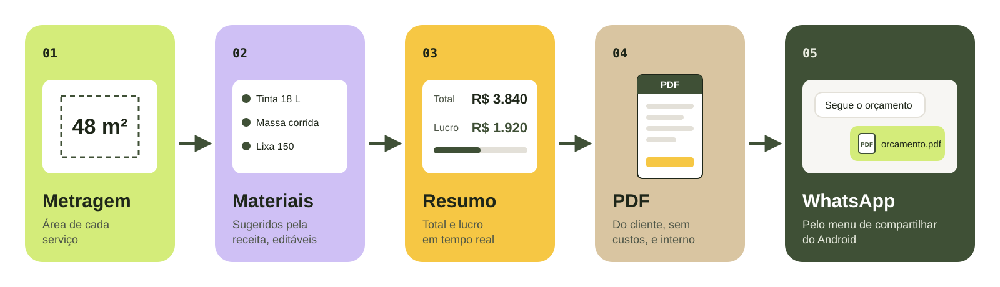
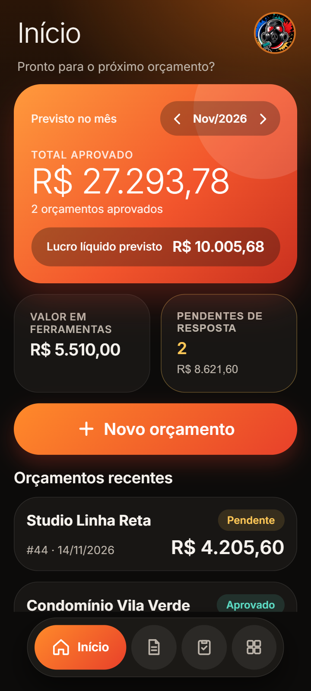
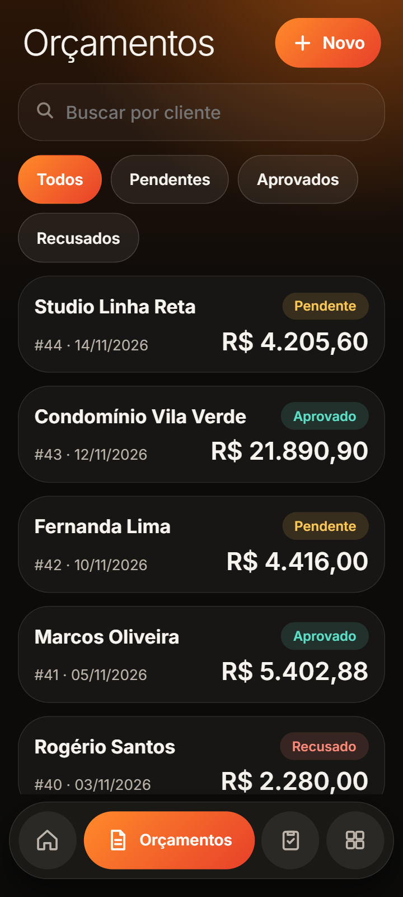
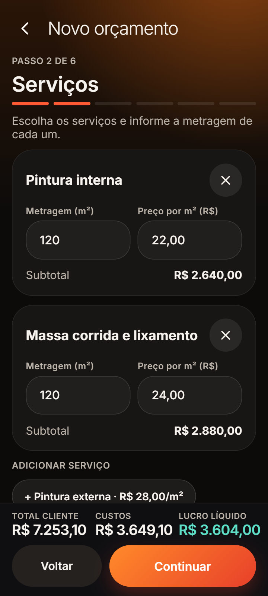
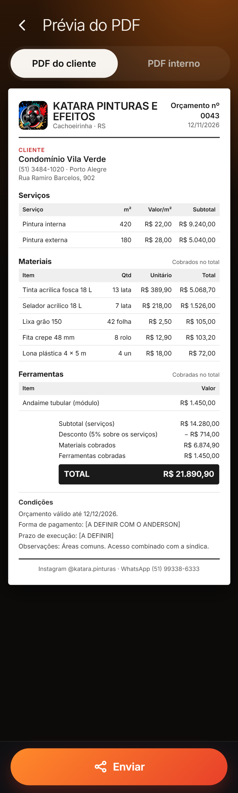

Projeto para cliente • App Android • 2026
Katara App
Um app Android que monta orçamentos de pintura em poucos toques, mostra quanto o pintor vai lucrar e gera o PDF para enviar ao cliente, tudo no celular e sem precisar de internet.

O problema
O cliente montava os orçamentos no Canva: copiava um modelo, digitava os serviços e os valores e fazia as contas por fora. Ele não tem notebook e tem pouca familiaridade com tecnologia. O app precisava gerar um orçamento com cara profissional em poucos toques, mostrar quanto ele vai lucrar e funcionar só no celular.
O que o app faz
- Cadastros de clientes, funcionários, materiais, ferramentas e serviços, cada serviço com a sua receita de materiais;
- Orçamento guiado, com vários serviços e a metragem de cada um, materiais sugeridos e editáveis, equipe, ferramentas, desconto e um resumo fixo no rodapé que atualiza enquanto ele preenche;
- Status pendente, aprovado ou recusado. Aprovar gera um atendimento, que aguarda o agendamento;
- Dois PDFs: o do cliente, sem custos, e o interno, com custos e lucro;
- Painel com o previsto nos orçamentos aprovados do mês, o lucro e os pendentes;
- Backup para exportar e restaurar todos os dados.
Como organizei o trabalho
O projeto não tem prazo do cliente, então defini meus próprios marcos. Dividi o trabalho em fatias verticais: em vez de terminar todo o banco e depois todas as telas, cada fatia entrega algo que funciona de ponta a ponta. O primeiro marco era o cliente gerar um PDF de verdade no celular dele. Ele foi cumprido em 18 de novembro de 2026, com o APK instalado e testado. Planejei cerca de 125 horas em oito fatias, com 5 horas de folga.
Decisões que tomei
Do desktop para o Android
Comecei o projeto como um app de desktop, com Tauri, Rust e SQLite. Conversando com o cliente, descobri que ele não tem notebook, só o celular. Refiz o plano para Android com React Native e Expo, aproveitando o que eu já sabia de React. Deixei o iOS de fora, porque ele usa Android. O app é entregue como APK, gerado pelo EAS Build, sem passar pela loja.
Offline, com o banco no celular
É um único usuário, que muitas vezes está numa obra sem internet boa. Um servidor traria custo de hospedagem e login sem resolver nenhum problema dele. Escolhi o SQLite dentro do celular, com migrações versionadas. O preço dessa escolha é o backup: criei botões para exportar e restaurar o banco inteiro, e o backup automático do Android fica como segunda camada.
Dinheiro em centavos
Somar valores com casas decimais em JavaScript gera erros como 0.1 + 0.2 = 0.30000000000000004. Por isso todo valor é guardado em centavos, como número inteiro, e só vira reais na tela. A regra de arredondamento ficou definida nos testes: cada linha é arredondada para centavos antes da soma, e o desconto é arredondado uma única vez.
O cálculo veio antes das telas
O cálculo do total e do lucro é a parte em que um erro custa dinheiro ao cliente. Escrevi calcularOrcamento como uma função pura, sem tela e sem banco, usando TDD: primeiro o teste que falha, depois o código mínimo para passar, depois a limpeza. Os testes cobrem desconto sobre os serviços ou sobre o total, os modos de cobrança, orçamento sem ferramentas e lucro negativo. O banco também é testado: os repositórios rodam contra um SQLite em memória com as mesmas migrações do app. Hoje são mais de 100 testes.
Orçamento antigo não muda
Quando o preço de uma tinta sobe no catálogo, um orçamento enviado no mês passado não pode mudar de valor. Cada item guarda uma cópia do preço do momento em que entrou no orçamento. O total e o lucro também ficam gravados e são recalculados na mesma transação a cada alteração.
Sugerir sem impor
Para sugerir os materiais a partir da metragem, cada serviço tem uma receita: cada material é calculado por m² ou em quantidade fixa, arredondado para cima. A sugestão é sempre editável, porque o cliente conhece a obra melhor do que a fórmula.
O que o cliente vê e o que entra no lucro
Às vezes o pintor cobra a tinta à parte, às vezes só informa o valor, às vezes nem mostra. Em vez de criar uma regra para cada caso, cada orçamento tem um modo para materiais e outro para ferramentas: cobrado, informado ou oculto. O modo só decide o que aparece no PDF e o que o cliente paga. O custo entra no lucro sempre.
PDF em HTML e o menu de compartilhar
Descartei o jsPDF, que é feito para o navegador. Monto o PDF em HTML e CSS e converto com o expo-print, o que deixa o layout fácil de ajustar e o gerador fácil de testar: entram dados, sai texto. Para enviar, uso o menu de compartilhar do Android em vez da API do WhatsApp Business. O cliente escolhe o contato como já fazia, sem cadastro e sem custo. O PDF tem fundo branco, mesmo com o app escuro, para não gastar tinta se for impresso.
Arquivar em vez de excluir
Apagar um cliente ou um material quebraria os orçamentos antigos. Por isso nada é excluído: os cadastros são arquivados, somem das listas e continuam nos orçamentos que os usam. Também bloqueei mudanças de status que deixariam os dados inconsistentes, como voltar para pendente um orçamento cujo atendimento já começou, sempre com uma mensagem explicando o motivo.
Uma decisão que precisei rever
Ao planejar o painel, percebi que "aprovados do mês" exige a data de aprovação, e o banco não tinha essa coluna. Usar a data de criação colocaria um orçamento criado em outubro e aprovado em novembro no mês errado. Criei uma segunda migração com a coluna aprovado_em, em vez de editar a primeira. Essa é a regra do projeto para mudar o banco sem apagar os dados de quem já tem o app instalado.
Próximos passos
Depois da primeira versão: registrar pagamentos recebidos e despesas reais, mostrar a margem por serviço e atualizar os preços dos materiais pela internet.
Telas




Como rodar
git clone https://github.com/Isabelle05-bit/Katara-App.git
cd Katara-App
npm install
npx expo startPara rodar os testes, use npm test.